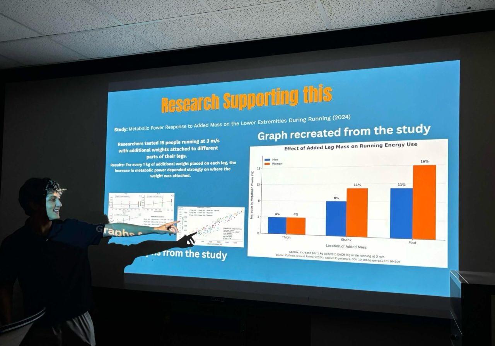

01 /
01 /Lower-limb exoskeleton
Mechanical subsystem development for a unilateral lower-limb exoskeleton, connecting actuator packaging, adjustable structures, and the human interface.
MECHANICAL ENGINEERING / USF
I’m William Moreira Heck.
A mechanical engineering student turning a hands-on curiosity into thoughtful mechanical design.

From an idea
to an assembly.
01 / SELECTED WORK
From wearable mechanisms to cars back on the road. A closer look at the problems, decisions, and work behind each project.
01 /Mechanical subsystem development for a unilateral lower-limb exoskeleton, connecting actuator packaging, adjustable structures, and the human interface.
 02 /
02 /An ABENICS-based shoulder concept extended into a mechanical arm, wrist, and five-finger hand, with a long-term goal of human-motion tracking.
 03 /
03 /A hands-on restoration combining body repair, component replacement, reassembly, and manual-transmission troubleshooting.
 04 /
04 /Helping turn a $500 non-running auction car into a drivable vehicle through diagnosis, repair, and exterior restoration.
 05 /
05 /Mechanical concept development and drivetrain research for the IEEE USF SoutheastCon robotics team.
02 / THE PERSON BEHIND THE PARTS

I want to help push robotics forward, especially technology that expands what people can do. Working on an exoskeleton and a robotic arm is my way of starting with real mechanical problems.
I’m studying Mechanical Engineering at the University of South Florida’s Judy Genshaft Honors College, with graduation expected in spring 2030. My interests span robotics, biomedical applications, aerospace, automotive systems, and controls.
At IEEE USF, I contribute to exoskeleton mechanical integration and competition robotics. Outside the CAD environment, automotive restoration has given me experience with tools, diagnosis, parts sourcing, and the patience to work through a problem.
I’m looking for opportunities to learn from experienced engineers and contribute to research and practical design work.
Read my full résumé ↗SolidWorks / CAD fundamentals
Actuator packaging & fit checks
Fabrication drawings & BOMs
Disassembly & reassembly
Automotive troubleshooting
Parts sourcing & cost tracking
Subsystem documentation
Design research & communication
English & Portuguese
03 / EXPERIENCE & EDUCATION
B.S. Mechanical Engineering · Expected spring 2030
Judy Genshaft Honors College
Florida Academic Scholars Award (Bright Futures)
Exoskeleton mechanical team & SoutheastCon robotics.
CAD, integration, motor research, and team design work.
High-volume service in Winter Garden, Florida. Balanced 15–20+ hour work weeks with school, building communication, reliability, and real-time problem solving.
04 / WHAT’S NEXT
Research, internships, and interesting mechanical problems.
I’d love to connect.